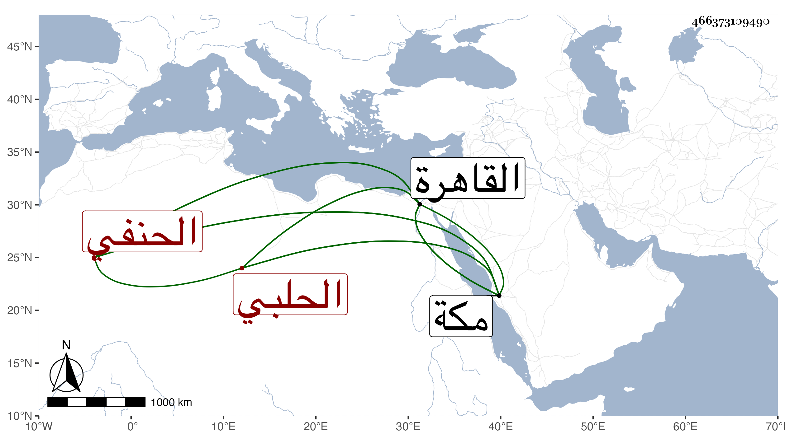

0902Sakhawi.DawLamic.ITO20230111-ara1.EIS1600.466373109490
Biography ID: 466373109490
551
محمد بن حسن بن حمزة بن يوسف الشمس أبو الأسعد الحلبي الحنفي نزيل القاهرة ثم مكة وأخو عبد الرحمن الماضي ويعرف بابن الأمين الكاتب . قدم مع أبيه القاهرة فطلب الحديث ودار على جماعة من الشيوخ وكتب الطباق وانتقى وتميز قليلا واستعان بي في كثير من مقاصده في ذلك ، وخطه حسن وفهمه جيد وفضائله متنوعة ولكن الغالب عليه فن الأدب ، مع حسن عشرة وتودد وستر وقد أنشدني أشياء من نظمه ورأيته كتب على مشيخة التقي الشمني تخريجي له ثناء ، وسافر إلى مكة فحج وأقام بها على طريقته حتى مات في ليلة الخميس عاشر ربيع الأول سنة اثنتين وستين رحمه الله وإيانا .
